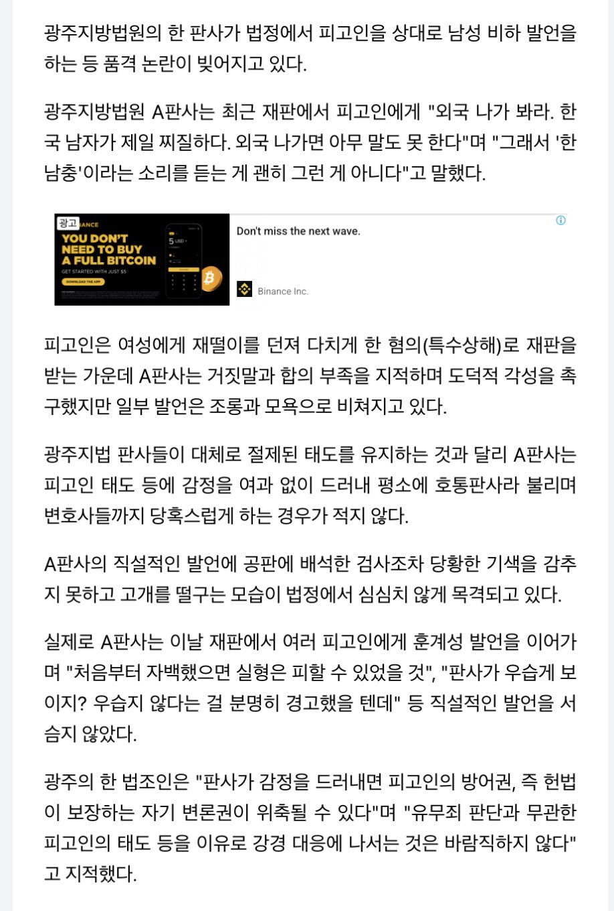

여자일까?
판새새끼들부터 AI로 갈아치워야겟는데
법복 벗으면 병,신인 새끼들이
말하는거 진짜 거만하네
판사는 피가 황금색이라도 되는줄
편견이 심한 판사네
쌍년 존나 무식하네
판사에 자아가 존나많네
저거랑 짐이 관심법을 쓰는거랑 뭔차이임? ㅋㅋㅋ
시발 존나어이가없네
공무원이면 징계사유인데 법관한테는 품위유지의무가 없나?
좆대로 판결내려도 책임의무가 없는데 품위를 왜 지켜야하죠?
사실상 판사는 3권 분립에서 한 축을 담당하고 있기 때문에 명백한 죄를 지은거 아닌이상 절대 무적임
판사가 해외를 안나가봤네 ㅋㅋ 해외가 더 심한데
예?
판사 다 죽여야한다니까 누누히 얘기한다. 이 새끼들이 한국에서 사람 제일 많이 죽이는 새끼들이야
남자면 대체 얼마나 퐁퐁에 가스라이팅으로 세뇌당한건지 모르겠다
범죄자한남만 보다보니 흑화해버리신듯 ㅠ
재떨이 던지고 지가 잘했다고 거짓 증언하고 그래서 판사가 빡친건 맞는듯
근데 무례한 발언은 맞지 한국 남자들이 젤 찌질하다가 아니라, 내가 본 남자중에 가장 찌질하다 이랬어야하는데
아무리 빡쳐도 한남ㅊ ㅇㅈㄹ 은ㅌㅋㅋㅋ
ㅇㅇ 내 말이 그 말임. 누구보다 사람들을 동등하게 보고 평가해야 하는 사람이
이미 생각의 기저에 '한남은 찌질하다'가 박혀 있는 걸 보는 것도 안타깝고.
판새 새끼들 시발 저게 법정에서 아가리 쳐열만한 말인간 시발 새끼들 판새새끼들 평균 잘 보여주네
방구석에서 법전만 들여다보던 새끼가 외국은 나가봤나?
스윗 개포티의 표본을 보여주는구나.
ㅋㅋㅋ속이 보인다 보여
재판장에 ai양 정도 되는 여자가 한 명 있어서 잘보이려고 그랬나
지옥이 있어야함
영포티의 표본이네 저 판사가 ㅅㅂ ㅋㅋㅋ